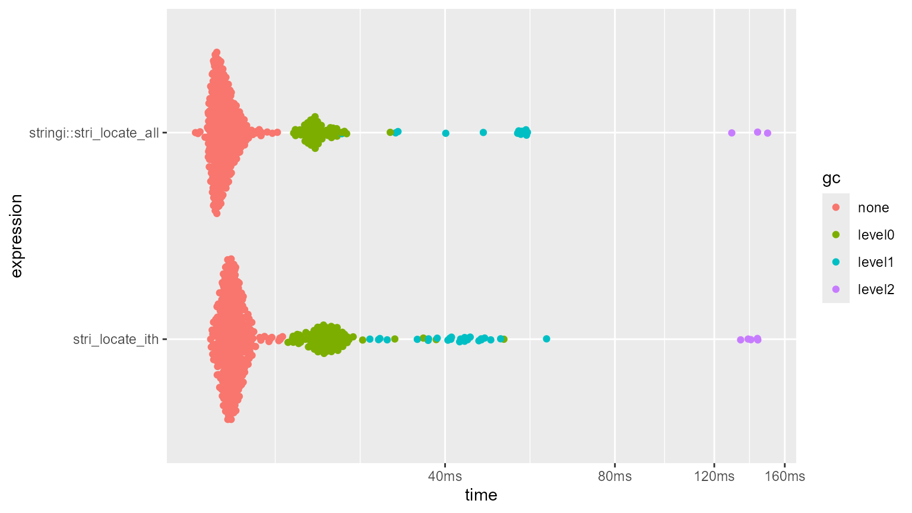

library(tinycodet)
#> Run `?tinycodet::tinycodet` to open the introduction help page of 'tinycodet'.
loadNamespace("bench")
#> <environment: namespace:bench>
loadNamespace("ggplot2")
#> <environment: namespace:ggplot2>
Introduction
Some effort has been made to ensure the functions in ‘tinycodet’ are
well optimized. The string related functions, for example, are about in
the same order of magnitude in terms of speed as the
stringi functions they call.
Here some speed comparisons are given, using the ‘bench’ package.
stri_locate_ith
stri_locate_ith() has about the same performance as
stri_locate_all():
n <- 5e4
x <- rep(paste0(1:50, collapse = ""), n)
p <- "1"
i <- sample(c(-50:-1, 1:50), replace=TRUE, size = n)
bm.stri_locate_ith_vs_all <- bench::mark(
"stri_locate_ith" = stri_locate_ith_fixed(x, p, i),
"stringi::stri_locate_all" = stringi::stri_locate_all(x, fixed = p),
min_iterations = 500,
check = FALSE
)
summary(bm.stri_locate_ith_vs_all)
ggplot2::autoplot(bm.stri_locate_ith_vs_all)#> # A tibble: 2 × 6
#> expression min median `itr/sec` mem_alloc `gc/sec`
#> <bch:expr> <bch:tm> <bch:tm> <dbl> <bch:byt> <dbl>
#> 1 stri_locate_ith 15.4ms 16.7ms 59.4 781KB 21.5
#> 2 stringi::stri_locate_all 14.4ms 16.1ms 61.6 391KB 14.4
#> Loading required namespace: tidyr
#> Warning: `aes_string()` was deprecated in ggplot2 3.0.0.
#> ℹ Please use tidy evaluation idioms with `aes()`.
#> ℹ See also `vignette("ggplot2-in-packages")` for more information.
#> ℹ The deprecated feature was likely used in the bench package.
#> Please report the issue at <https://github.com/r-lib/bench/issues>.
#> This warning is displayed once every 8 hours.
#> Call `lifecycle::last_lifecycle_warnings()` to see where this warning was
#> generated.
strcut
The strcut_ functions from ‘tinycodet’ have somewhat
similar performance as the boundary functions provided by ‘stringi’:
n <- 1e5
x <- rep("hello", n)
i <- sample(1:3, n, replace = TRUE)
loc <- stri_locate_ith(x, i=i, regex="a|e|i|o|u")
bm.strcut <- bench::mark(
"strcut_loc" = { strcut_loc(x, loc) },
"strcut_brk" = { strcut_brk(x, type = "", tolist = TRUE) },
"stringi::stri_split_boundaries" = {
stringi::stri_split_boundaries(x, type="character")
},
min_iterations = 500,
check = FALSE
)
ggplot2::autoplot(bm.strcut)
Row/columns-wise re-ordering
re-ordering rows/columns using the %row~% and
%col~% operators provided by ‘tinycodet’ is a faster than
doing so using traditional loops:
tempfun <- function(x, margin) {
if(margin == 1) {
for(i in 1:nrow(x)) x[i,] <- sort(x[i,])
return(x)
}
if(margin == 2) {
for(i in 1:ncol(x)) x[,i] <- sort(x[,i])
return(x)
}
}